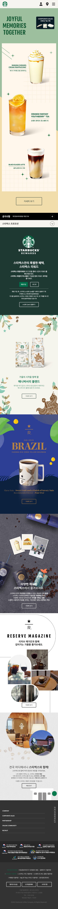
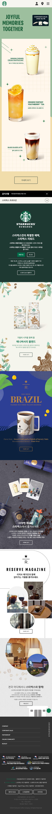

Portfolio
Kim min kyung
STARBUCKS
└ Stack : HTML / CSS / JavaScript
└ Media Query : DeskTop / Tablet / Mobile
Starbucks 공식 사이트 메인페이지를 클론한 프로젝트 입니다.
Vanilla JavaScript로 슬라이드, 아코디언을 직접 구현하였으며, Swiper 등의 외부 라이브러리는 사용하지 않았습니다.
또한 IntersectionObserver를 통해 요소가 화면에 등장할 때 애니메이션이 트리거되도록 설계하였습니다.